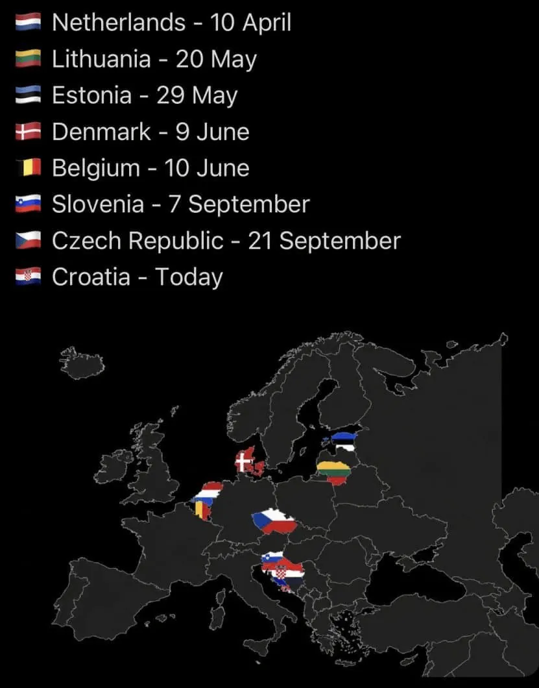

https://x.com/teslaeurope/status/2104844301461262602?s=46&t=WHwclR8mKvlCsbnAhAG_lA
유럽은 하나하나 FSD 풀리고 있음.

https://x.com/teslaeurope/status/2104844301461262602?s=46&t=WHwclR8mKvlCsbnAhAG_lA
유럽은 하나하나 FSD 풀리고 있음.
ㅋㅋㅋ테슬라 주식을 사야쓰것네
유럽도 뭐 자국 자동차 산업 강한 나라들은 귀신 같이 안풀리네 ㅋㅋㅋㅋ
일본도 테슬라 재팬도 지점장이 올해안에 풀겠다고 확인한다고 해도 대부분 안믿는 눈치임 ㅋㅋ
일본이 그런점에선 제일 빡셀듯 눈치볼 회사가 너무 많다 ㅋㅋ
도요타 닛산 혼다 ㄹㅇㅋㅋㅋㅋ
그리고 아날로그의 나라에서 FSD? 이거 쉽지않을듯
일본 골목사이즈 진짜 개좁던데 이거 테슬라 차량으로 커버 가능한가?
경차의 나라긴하지만 그래도 일반 사이즈 승용차도 다니긴 하니까 크게 문제는 안될듯. 아니면 경로상에서 우회할수도 있고..
저 국가들 ai한테 물어보니까 자동차브랜드가 없거나 비중이 작은 나라뿐임
테슬라가 급하면 트럼프한테 로비를 해서라도 규제풀엇겟지 ㅋㅋ 걍 우리나라가 우선순위가 아니겟지
다른 나라 규제 손 대는건 내정간섭 아니냐 ㅋㅋㅋ
그런거보다 테슬라가 이미 레벨3단계의 자율주행수준인데 책임문제로 레벨2단계로 배포중인것도 한몫한ㄴ다고봄
ㄹㅇ 감독형이라면서 감독도 제대로 안되고 지맘대로 가면 그게 3단계지
자국 자동차 산업이 없거나 약한 나라들이니까 빨리 푸는거지 뭐 우리는 영프독이 풀어야 시작일듯ㅋㅋㅋ
영국이 감히 거기 낄 자격이 됨?
일본이 들어가야지
영국 자동차가 예전만 못하지만 유럽이야기라 유럽 대표 선진국에 완성차 브랜드가 있어서 넣음
일본넣을까 했는데 왠지 일본은 우리보다 더 늦을거같기도해서ㅋㅋㅋㅋ
우리나라에 안풀리는건 그냥 테슬라가 날로 먹을라고 신청을 좆같이 하니까 안되는거야 . 테슬라가 신청만 제대로 하면 지금도 승인 가능해
풀려도 중국생산은 훨신더 늦을듯
중국공유기같은거 알자너
현기가 자율주행 완성시키기전까지... 어쩌고 저쩌고..
2007년 1월에 애플이 스마트폰을 출시했음
이때 한국은 이제 겨우 모양만 비슷한 소위
터치폰이니 햅틱폰이니 하는 것만 만들었는데...
경쟁이 안되니까
정부는 2009년 연말까지 거의 3년간
여러가지 규제를 통해 아이폰 도입을 막았음
이에 한국의 자칭 얼리어답터들은
아이폰 출시를 막는 정부규제를 비난하며
"왜 한국은 출시 못하게 하냐. 정치인 새끼들이
삼성한테 받아 처먹어서 그런거다!
이딴 식의 정경유착 때문에 한국은 이대로
IT경쟁에서 뒤쳐지고 도태될거다"
이러면서 난리난리 쳤음
그런데 어찌됨?
몇년 후 한국도 그럴듯한 스마트 폰을 만들어 냈고...
모토롤라 노키아 소니 파나소닉 등등
다른 외국 핸드폰 다 개작살 났지만
지금 삼성 갤럭시는 아이폰에 이어 점유율
2위 자리를 지키고 있고
한국이 3년간 아이폰 못썼다고 IT경쟁에서
도태 되지도 않았음
지금 생각해보면... 그때 한국인들은 3년간
외국인들은 쓰는 스마트폰을 쓰지 못했지만
그덕에 삼성전자가 살아난건 아닐까 함
테슬라의 FSD 막는 것.
이건 물론 소비자의 선택권을 침해하는 것임
그러나 소비자도 돈이 있어야 소비를 하고
자국 산업이 살아야 돈을 벌지
한국은 필사적으러
테슬라 FSD 도입을 늦춰서
반도체와 함께 대한민국 산업의 양대축인 자동차 산업,
까놓고 말해 현대/기아가 자율주행시대를
따라갈 수 있는 여유를 얻어야할 절박한
사정이 있는거임
현기차 직원들 억대 연봉받는거
배아파서 망하기를 바라는 애들 많겠지만
걔들 망하고 거지되면
대한민국에서 테슬라 FSD 누릴 수 있는 사람
오히려 엄청 줄어들거임
다들 알고있잖아 현대할때까지 아무것도 없다
테슬라 개섁히들
어디 자랑스런 현기차의 본진을 넘보고 이써
울나라는 전세계에서 제~일
늦게 승인나는 국가일 것으로 장담한다